Noson is a SONOS controller for Ubuntu platforms
The fast and smart controller for your SONOS devices. You can browse your music library and play track or radio on any zones. You can manage queue and playlists and fully control the playback.
Written with QML/C++ for maximal performance
-
Application for your phone and touch is available from Ubuntu store.
-
Ubuntu packages for your desktop are available in repository
ppa:jlbarriere68/noson-app. Go to noson-app PPA for technical details.
Screenshot
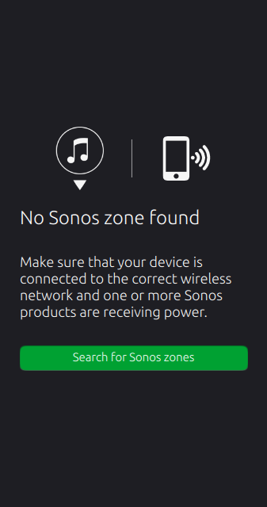
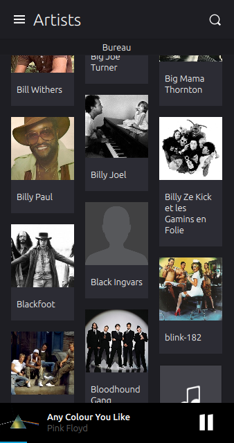
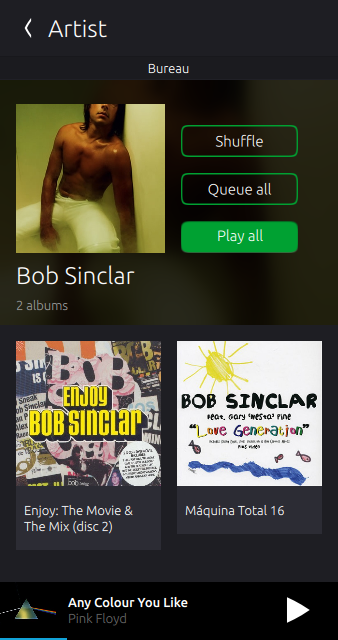
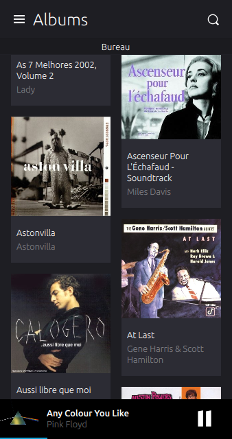
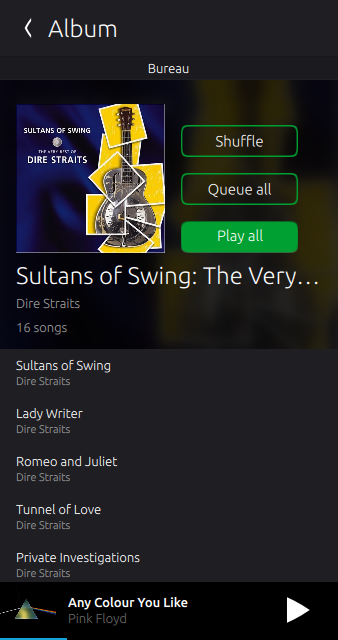
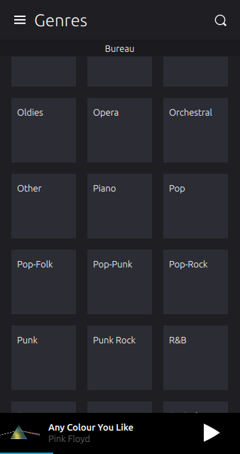
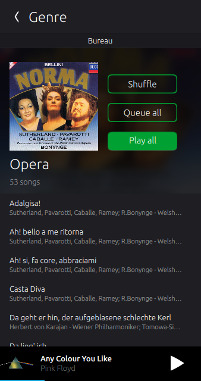
 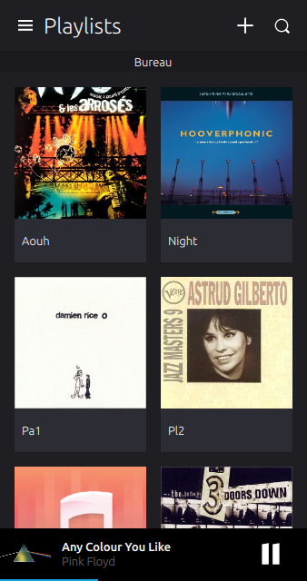
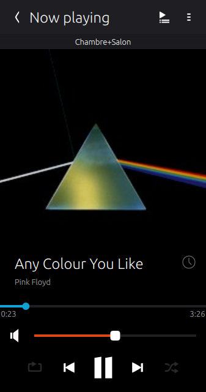
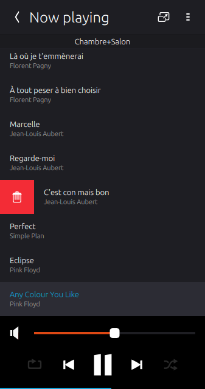
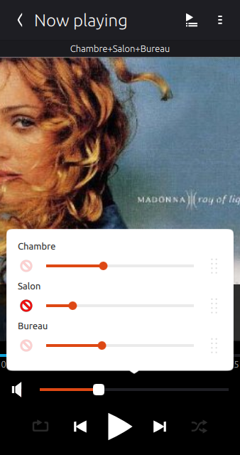
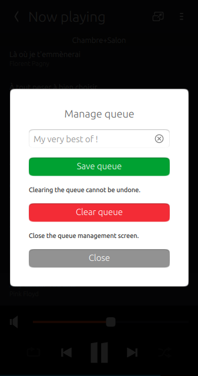
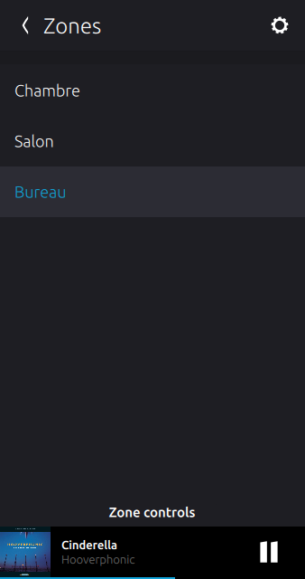
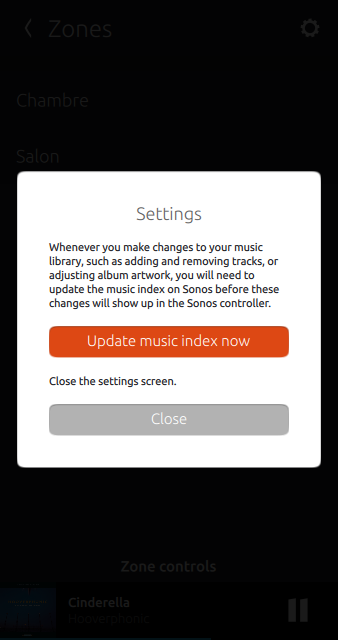
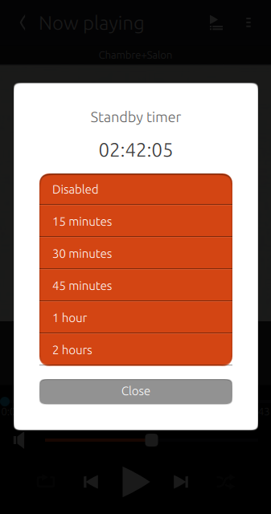
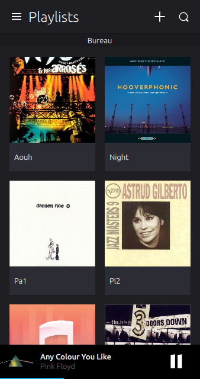
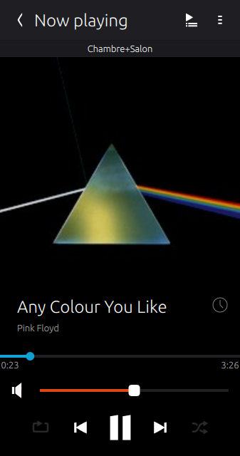
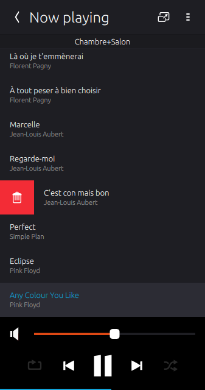
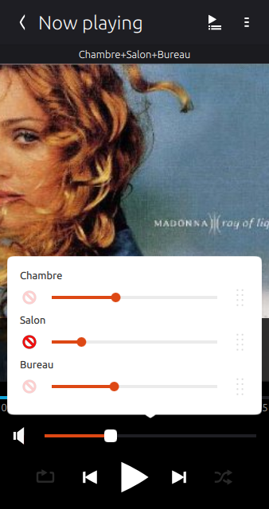
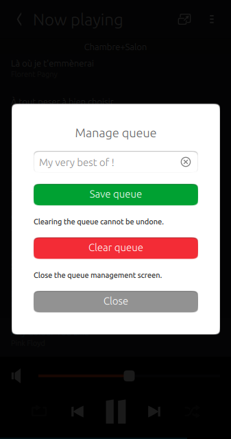
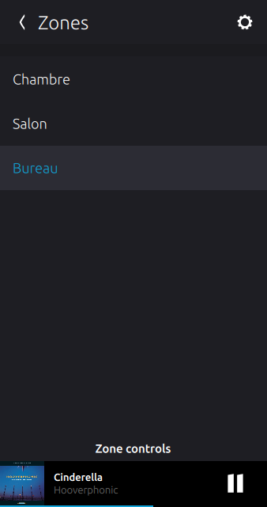
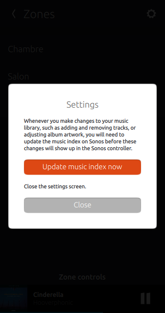
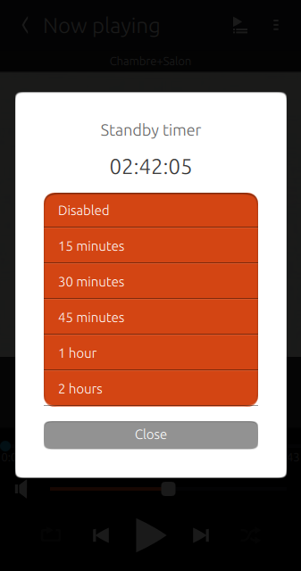
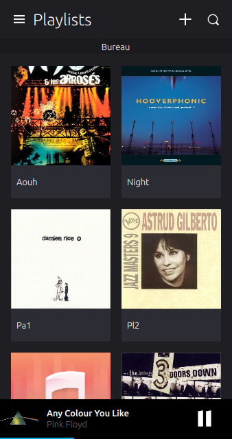
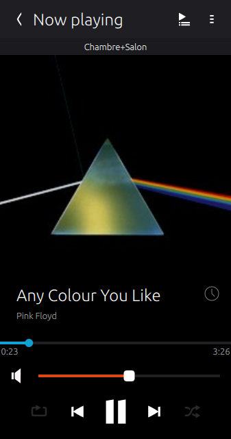
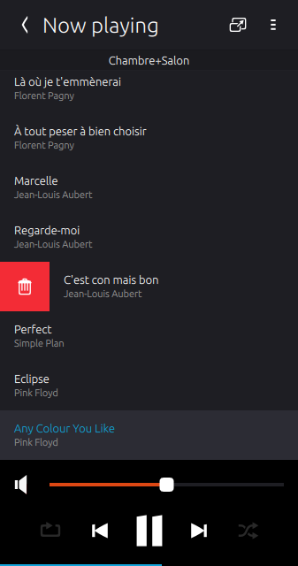
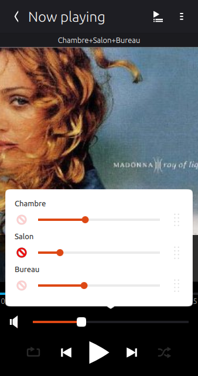
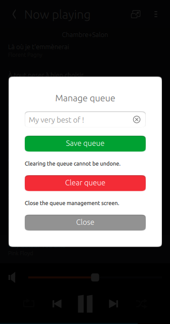
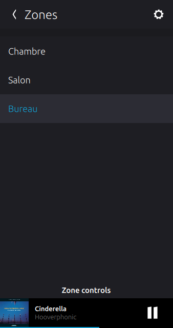
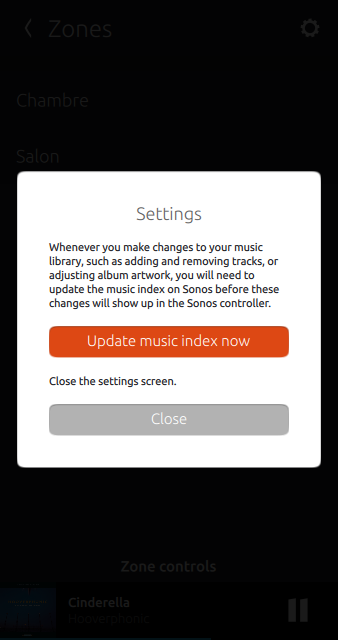
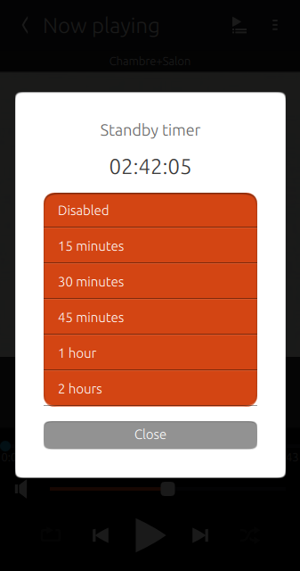